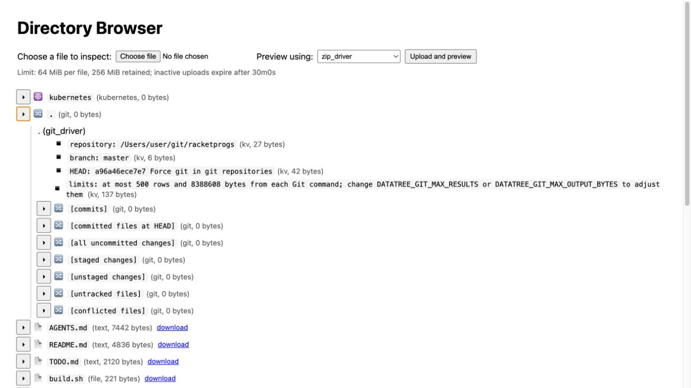

Datatree
Datatree is a read-only browser for directories, repositories, archives, structured files, and Kubernetes resources.

Datatree presents nested data as an expandable tree in a web browser. Drivers understand different container types, so directories can open repositories and archives, archives can contain more archives, and text, JSON, images, PDFs, HTML, and CSV files can be inspected without changing their source data.
The Git view shows repository details, commits, committed files, staged and unstaged changes, untracked files, and conflicts. Kubernetes contexts, namespaces, resource types, and objects can be browsed through the same interface.
The recommended macOS installation uses Homebrew:
brew tap donomii/tap https://gitlab.com/donomii/homebrew-tap.git
brew install datatree
Then run datatree in the directory you want to inspect.
The standalone Datatree binary for macOS arm64 (about 9.3 MB) is also available, but macOS may block a directly downloaded unsigned executable. The Homebrew source build is the supported installation route.
SHA-256: 07e21d651b803625be53a6ea4853940cafba49e17f9c42716e1262a47c335e09
The source is in the racketprogs repository on GitLab.